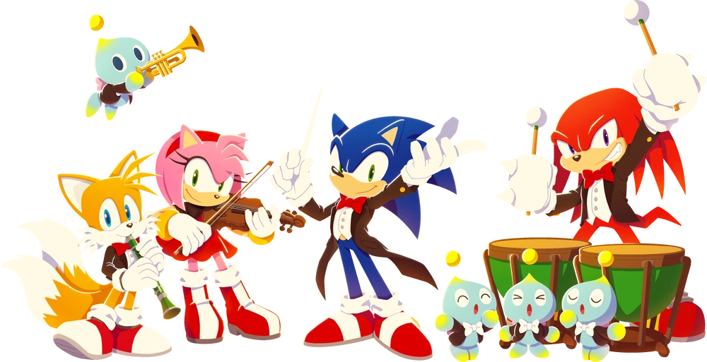
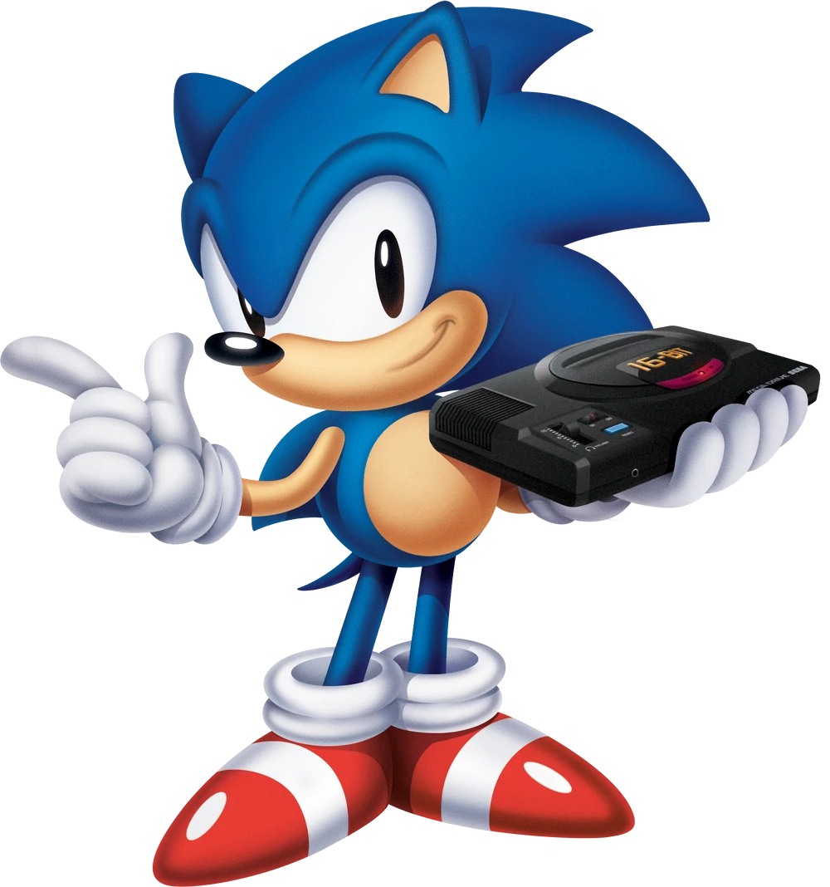
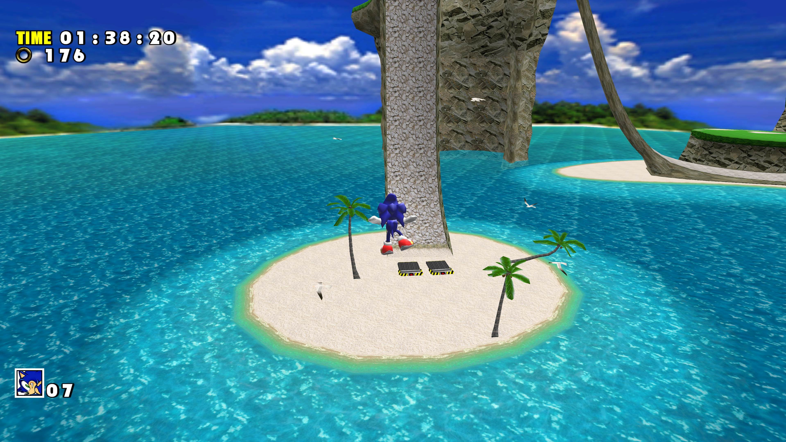
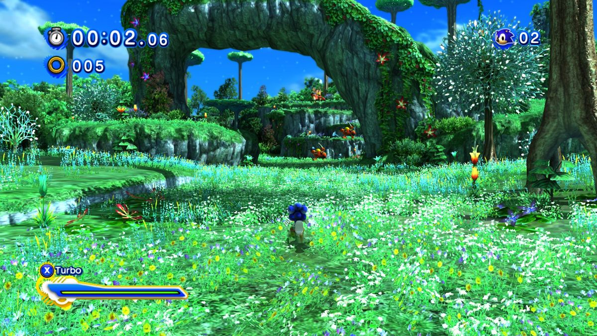

Моя гиперфиксация :>
Sonic the Hedgehog - серия видеоигр, созданная японской студией Sonic Team в 1991 году, принадлежащей компании Sega. А также моя любимая игровая франшиза!
Это мой сайт-визитка, посвящённый этой франшизе.

Типы геймплея
За своё долгое существования франшиза Sonic the Hedgehog имела немало экспериментов над геймплеем в основных играх.
Тремя самыми успешными видами геймплея были:
- 2D платформер (Основные 4 игры на Sega Genesis, трилогия Advance, Sonic Mania, Sonic Superstars, и т.п.)
- 3D платформер с разнообразными особенностями в геймплее у разных персожей и отдельными уровнями подстроенных специально под этих персонажей (дилогия Adventure, STH '06)
- 3D экшен-платформер с отдельной кнопкой буста и фокусировкой на реакции игрока (Sonic Unleashed, Sonic Generations, Sonic Colors)
Также есть немало других видов геймплея во франшизе, но они имеют либо только 1 игру, либо не являются частью основной линейки.

Скриншоты

Пример геймплея 3D платформера с разнообразными особенностями в геймплее у разных персожей
